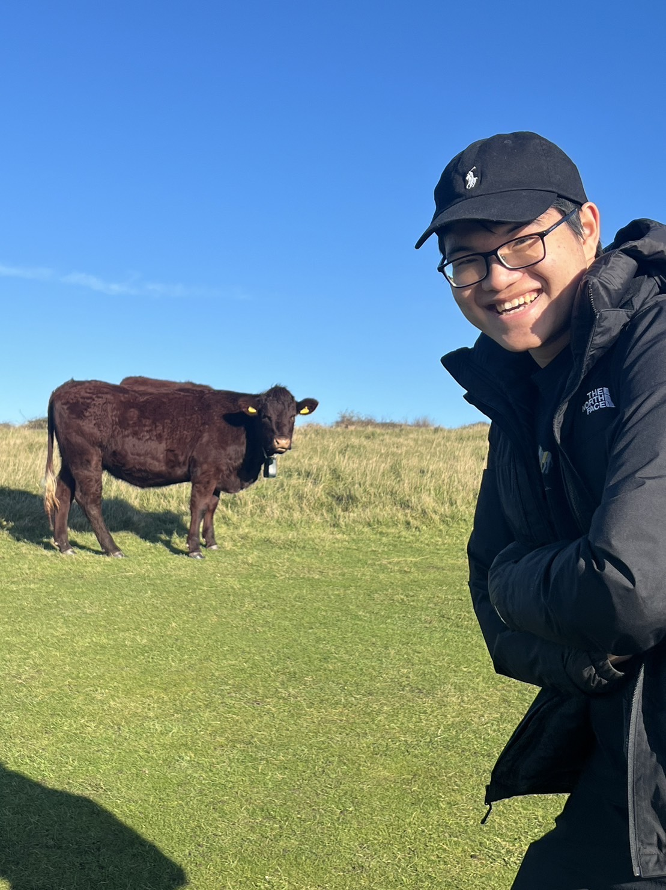

Pol Tawin Choksitthikasam
Hello! I’m Pol Tawin Choksitthikasam, a third-year Computer Science student at the University of Sussex.
This page is a balanced mix of my CV and a glimpse into my personal interests—designed to help you get to know me a little better.
I’m currently completing my final-year project on a CPD learning system, experimenting with cultivating wasabi in my backyard,
running a Youtube channel about the indie game Axie Infinity, and, of course, applying for a master's degree.
tawin.phol@gmail.com
Education
BSc (Hons) Computer Science
University of Sussex
9/2022 - present
Key Modules include:
- Database, Data Structure and Algorithm
- Operating System, Compliers and Computer Architecture
- Programming Concepts and Further Programming
- Software Engineering
MEng (Hons) Electronics and Electrical Engineering
University of Edinburgh
9/2020 - 5/2022
Key Modules include:
- Engineering Design
- Engineering Mathematics
- Introduction to Data Science
- Proof and Problem Solving
Concordian International School
International Baccalaureate
8/2013 - 12/2015 & 8/2016 - 6/2020
Subjects include:
- Higher Level: Mathematics, Physics, Computer Science
- Standard Level: English Language and Literature, Mandarin, Psychology
Tech stack
Python, Java, JavaScript, NodeJS
Django, Express, Flask, FastAPI
React, Next JS
Postgres, MongoDB, MySQL
Work Experience
RungWattana Logistics6/2023 - 7/2023
Data Analyst Intern
- Conducted data analysis to streamline logistics processes and improve storage efficiency.
- Restructured the storage plan to reduce retrieval time, allowing same-day items to be stored together.
De Roma Fragrance & Chemicals 6/2022 - 8/2022
ERP Implementation Team Intern
- Assisted in implementing the SAP ERP system to improve inventory and process management.
- Collaborated with departments to ensure successful adoption of ERP solutions.
- Successfully forecasted raw material needs, reducing annual waste by 5% across 400 SKUs.
Data Café 6/2021 - 8/2021
Analyst Intern
- Researched as a third party company for one of Thailand’s biggest petroleum producers
- Delivered a big data report on Thai’s consumer behaviour with PowerBI
Egg Digital 6/2019 - 8/2019
Backend Engineering Intern
- Collaborated with team of 5 to develop an automated digital vending machine
- Inspected the backend logic for storing logs and transaction data